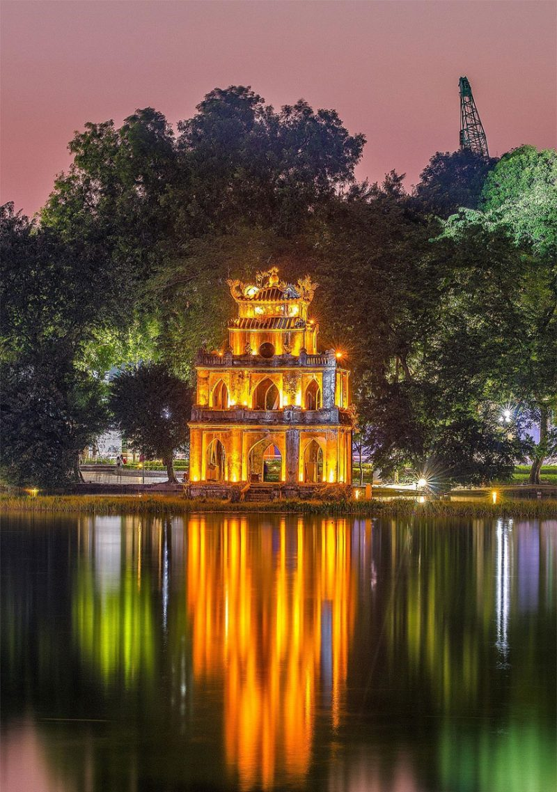
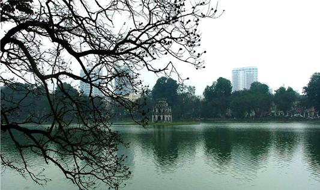
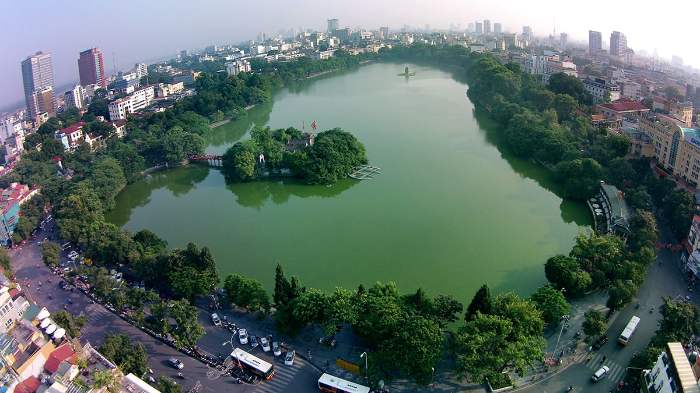

Hồ Hoàn Kiếm
Lake of the Restored Sword4.3 - Vùng nước - Địa điểm lịch sử - Thiên nhiên




Thời gian đề xuất
Giờ mở cửa
Địa chỉ
4 giờ
Giờ mở cửa
00:00 - 23:59
Địa chỉ
1-8 P. Lê Thái Tổ, Hàng Trống, Hoàn Kiếm, Hà Nội, Vietnam
Hồ Hoàn Kiếm (chữ Nôm: 湖還劍 hoặc 還劍湖) còn được gọi là Hồ Gươm là
một hồ nước ngọt tự nhiên nằm ở trung tâm thành phố Hà Nội. Hồ có diện
tích khoảng 12 ha[2]. Trước kia, hồ còn có các tên gọi là hồ Lục Thủy
(vì nước có màu xanh quanh năm), hồ Thủy Quân (dùng để duyệt thủy
binh), hồ Tả Vọng và Hữu Vọng (trong thời Lê mạt). Tên gọi Hoàn Kiếm
xuất hiện vào đầu thế kỷ 15 gắn với truyền thuyết vua Lê Lợi trả lại
gươm thần cho Rùa thần. Theo truyền thuyết, trong một lần vua Lê Thái
Tổ dạo chơi trên thuyền, bỗng một con rùa vàng nổi lên mặt nước đòi
nhà vua trả thanh gươm mà Long Vương cho mượn để đánh đuổi quân Minh
xâm lược. Nhà vua liền trả gươm cho rùa thần và rùa lặn xuống nước
biến mất. Từ đó hồ được lấy tên là hồ Hoàn Kiếm. Tên hồ còn được lấy
để đặt cho một quận trung tâm của Hà Nội (quận Hoàn Kiếm) và là hồ
nước duy nhất của quận này cho đến ngày nay.
Đánh giá Hồ Hoàn Kiếm
từ Random Someone
Had a great time. If you are going to get a petty cab ride ( 3 wheel
covered bike ) make sure you shop around. We decided to and the first
one we found was $5 per minute. Luckily we declined and saw that
others were different. Another one was $6.99 a minute. Eventually a
guy came by asking people if they wanted a ride, his said "flat rate"
he gave us 2 options. Small and large loop for $20 and $40
respectively. He was very knowledgeable and stop and took pictures of
us. Large loop probably took close to a half hour. I gave him $60. It
was a great way to see the park. Highly recommended if you find the
right guy.
từ Jamii Neubauer
I always have to visit Central Park when I go to NYC. So much beauty,
so much life, so much to do and see in the most gorgeous setting. Live
music, live art exhibits, people living and enjoying their lives all
around you as you walk through. Plenty of statues to gaze upon as you
walk around. Gorgeous little ponds inside of the park add even more
beauty. It’s just as beautiful in the winter as it is in the summer.
Never a dull moment 😍😍😍
từ Sean Faison
I love Central Park! There is so much to do. You can play softball or
Soccer on the athletic fields, there is a carousel and in the winter
an ice skating rink. You can rent row boats at Bethesda Fountain and
enjoy a wonderful and unique view of the city from the row boat. There
are so many things to do in this park that you can easily spend an
entire day here. ENJOY!
Xem thêm trên Google
Footer links: About us, Contact us, F.A.Q, Privacy Policy, Disclaimer, Terms of use, ect..
Other links: Powered by, Associates, ect.. Social media links